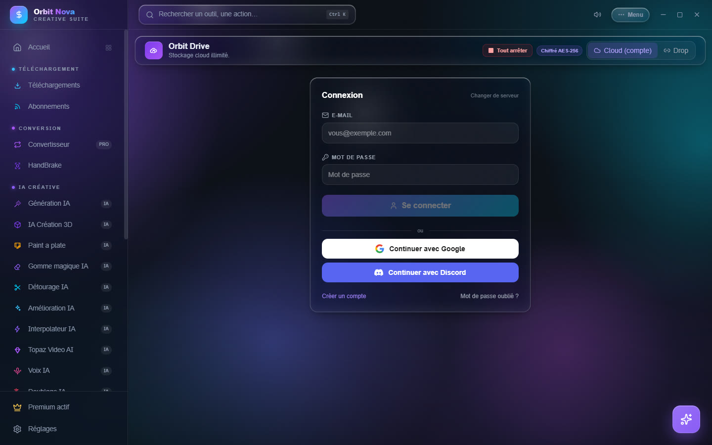

Orbit Drive
Orbit Drive est votre stockage en ligne, chiffré de bout en bout (AES-256) : vos fichiers sont chiffrés sur votre PC avant l'envoi, ni le serveur d'Orbit ni Discord ne peuvent les lire. Il sert aussi à partager des fichiers par lien, à synchroniser des dossiers de votre PC et à travailler à plusieurs sur un même dossier. Tout ce qui est dans votre Drive se retrouve aussi sur orbit-drive.com.
Les morceaux chiffrés sont stockés sur Discord (ou Telegram). Ces services ne sont pas faits pour ça et un compte peut être supprimé : gardez toujours une autre copie de vos fichiers importants.
L'onglet a trois modes, en haut à droite : Cloud (compte), Drop et Local (le mode Local n'apparaît que si vous l'utilisez déjà).


Se connecter
- Créer un compte (e-mail et mot de passe) ou Se connecter. Vous pouvez aussi vous connecter en un clic avec Google ou Discord : la connexion s'ouvre dans votre navigateur puis revient seule dans Orbit.
- Choisissez une phrase secrète de chiffrement. Elle protège votre coffre (les clés de vos fichiers) et marche sur tous vos appareils.
À chaque ouverture, saisissez la phrase pour Déverrouiller le Drive ; Verrouiller le referme.
- Mot de passe oublié ? envoie un code par e-mail. Il change le mot de passe de connexion, pas la phrase secrète.
- Phrase secrète oubliée ? crée une nouvelle phrase. Vos fichiers personnels, impossibles à déchiffrer sans l'ancienne, sont supprimés ; les dossiers partagés avec vous reviennent tout seuls.
Personne ne peut retrouver votre phrase secrète, pas même Orbit. Notez-la en lieu sûr.
Ranger vos fichiers
- Envoyer des fichiers, Envoyer un dossier (avec ses sous-dossiers) ou glissez-les directement dans la fenêtre. Nouveau dossier et Actualiser sont dans la même barre.
- Rechercher par nom, ou tapez
#tagpour retrouver tout ce qui porte un tag. - Trier et filtrer : par nom, date, taille ou type, dans un sens ou dans l'autre ; n'afficher que les dossiers, vidéos, images, audio, documents ou archives. Vue Grille ou Liste.
- Les photos, vidéos et modèles 3D ont une miniature, les dossiers montrent un aperçu de leur contenu, et les fichiers de création affichent le logo de leur logiciel (Blender, After Effects, Photoshop…).
Le menu d'un fichier ou d'un dossier
Clic droit (ou bouton Actions) sur un élément :
| Action | Ce qu'elle fait |
|---|---|
| Ouvrir / Lire | Ouvre un dossier, lit une vidéo ou un son, affiche une photo ou un modèle 3D |
| Télécharger | Enregistre le fichier (ou le dossier entier) sur votre PC |
| Partager le lien | Crée un lien de partage, voir plus bas |
| Partager avec des personnes… | Invite d'autres comptes Orbit dans un dossier |
| Synchroniser sur ce PC… | Garde ce dossier identique à un dossier de votre PC |
| Renommer, Déplacer vers… | Change le nom ou l'emplacement |
| Copier vers…, Dupliquer | Copie instantanée : rien n'est renvoyé, et supprimer l'original ne touche pas à la copie |
| Tags…, Couleur | Ajoute des tags de couleur ou colore un dossier pour le repérer |
| Propriétés | Type, taille exacte, contenu, emplacement, date, tags, chiffrement |
| Supprimer | Supprime l'élément (Suppr) |
Sélectionner plusieurs éléments permet de les déplacer, copier, taguer ou supprimer d'un coup.
Voir sans télécharger
Un double-clic sur une photo ou un modèle 3D (GLB, FBX, OBJ, STL, PLY) l'ouvre dans la visionneuse, sans
rien enregistrer sur votre PC : flèches ← → pour passer au fichier suivant du dossier, Échap pour fermer.
Pour les modèles 3D, les textures sont retrouvées toutes seules dans le dossier du modèle. Les vidéos se lisent
directement.
Transferts
Chaque envoi ou téléchargement se met en pause et reprend, à côté du bouton Annuler. Tout arrêter, en haut du Drive, annule tous les transferts en cours et met les synchronisations en pause.
Partager un lien
Partager le lien sur un fichier ou un dossier crée un lien en une seconde (rien n'est renvoyé). Donnez un titre au partage, puis choisissez :
- Qui peut ouvrir le lien : Toute personne avec le lien ou Moi seulement ;
- Ce qu'on peut faire : Lire et télécharger, ou Lire seulement (la personne regarde et lit les vidéos, sans pouvoir enregistrer les fichiers) ;
- un Mot de passe (facultatif) : il ne quitte jamais votre PC, donnez-le séparément ;
- l'Expiration : 1 jour, 7 jours, 30 jours ou Jamais.
Puis Créer le lien : il est copié, avec un QR code à scanner ou à enregistrer. Le lien d'un dossier suit le dossier : ce que vous y ajoutez, supprimez ou renommez apparaît chez ceux qui ont déjà le lien.
Les liens s'ouvrent dans n'importe quel navigateur sur orbit-drive.com, sans installer Orbit ; l'aperçu affiché dans Discord ou WhatsApp montre le nom, le poids et le type du fichier.
Drop : partager sans compte
Drop est le Partage rapide : envoyez des fichiers chiffrés à quelqu'un, même sans compte.
- Envoyer : glissez vos fichiers ou dossiers, l'envoi démarre tout de suite et chaque fichier reçoit son propre lien. Copier le lien, QR code, Ouvrir dans le navigateur, ou Copier tous les liens. Taille illimitée, fichiers gardés 30 jours.
- Recevoir : collez un lien orbit-drive.com ou un code de partage. Un lien protégé demande son mot de passe.
- Mes partages : tous vos liens, avec leur expiration. Désactiver le lien coupe un lien déjà envoyé (les fichiers restent dans votre Drive).
- Dossiers partagés : les dossiers ouverts avec un code (
orbf1_…) ; vous pouvez Tout télécharger, les lire ou les Enregistrer dans mon Drive. Avec un compte, cette liste vous suit sur vos autres PC.
Synchroniser un dossier de votre PC
Comme Google Drive : un dossier de votre PC reste identique à un dossier du Drive, dans les deux sens. Ce que vous ajoutez, modifiez ou supprimez part tout seul, et les changements des autres arrivent en une à deux secondes.
- Dans le mode Cloud, ouvrez Synchronisation avec ce PC puis Synchroniser un dossier.
- Dossier de ton PC : Choisir un dossier…
- Dans le Drive : un nouveau dossier du même nom dans Mon Drive, ou le dossier ouvert.
- Synchroniser.
Le panneau montre l'état (À jour, fichiers en cours, En pause), l'Activité récente, et les boutons Synchroniser maintenant, Mettre en pause / Reprendre et Arrêter la synchronisation (les fichiers restent sur votre PC et dans le Drive).
- Rien n'est écrasé : si deux personnes modifient le même fichier en même temps, les deux versions sont gardées (« … (conflit - prénom date) »).
- Si beaucoup de fichiers disparaissent d'un coup de votre PC, Orbit demande une confirmation : Supprimer du Drive, ou Non, les remettre sur mon PC.
- Avec un dossier synchronisé, Orbit démarre avec Windows en arrière-plan (icône près de l'horloge), rattrape ce qui a changé pendant qu'il était fermé, et consomme très peu de mémoire. Quitter demande confirmation.
Dossiers partagés à plusieurs
Pour travailler à plusieurs sur un même projet (Blender, After Effects…) :
- Clic droit sur un dossier › Partager avec des personnes…, tapez l'E-mail du compte Orbit de la personne.
- Cochez Peut modifier (sinon, elle est en Lecture seule), puis Inviter.
- La personne reçoit un e-mail. L'accès s'ouvre dès qu'elle ouvre son Drive une fois (avec sa phrase secrète). Sinon, envoyez-lui le lien avec Copier le lien d'invitation.
Elle trouve le dossier dans Partagés avec moi et peut le Synchroniser sur ce PC…. Personnes ayant accès… liste les membres ; Retirer l'accès, Arrêter le partage ou Quitter ce dossier à tout moment. Le chiffrement reste de bout en bout.
Stocker sur Telegram ou sur votre Discord
- Telegram : stocke vos nouveaux fichiers (chiffrés) dans les Messages enregistrés de votre compte
Telegram. Il faut un
api_idet unapi_hash(sur my.telegram.org › API development tools), puis votre numéro et le code reçu. La connexion Telegram reste sur votre PC. - Mode Local : la liste des fichiers et la clé restent sur votre PC, les morceaux vont dans votre propre salon Discord via un webhook (Paramètres du salon › Intégrations › Webhooks › Nouveau webhook › Copier l'URL). Plusieurs webhooks, un par ligne, rendent les envois plus rapides.